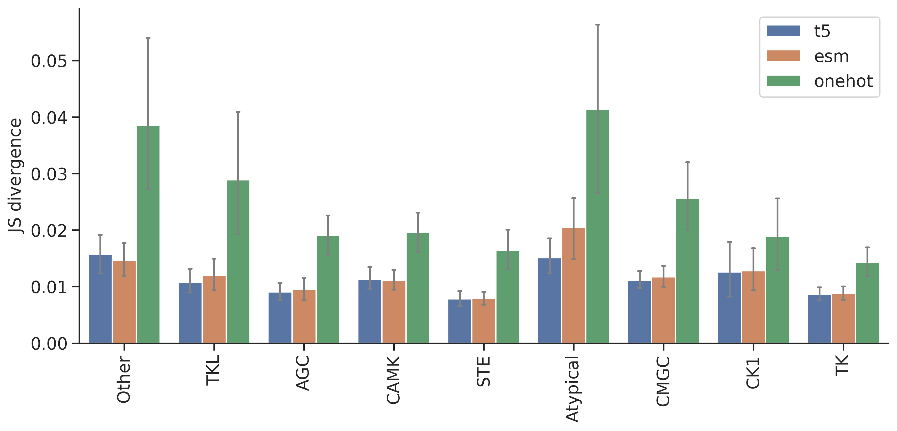

import numpy as np, pandas as pd
import os, random
from katlas.data import *
from katlas.train import *
from fastai.vision.all import *
from katlas.dnn import *DL training
Setup
seed_everything()def_device'cuda'Data
df_t5=pd.read_parquet('train/pspa_t5.parquet').reset_index()
df_esm=pd.read_parquet('train/pspa_esm.parquet').reset_index()
df_onehot = pd.read_parquet('train/pspa_onehot.parquet').reset_index()(df_onehot['index'] == df_esm['index']).value_counts()index
True 368
Name: count, dtype: int64(df_t5['index'] == df_esm['index']).value_counts()index
True 368
Name: count, dtype: int64t5_col = df_t5.columns[df_t5.columns.str.startswith('T5_')]t5_colIndex(['T5_0', 'T5_1', 'T5_2', 'T5_3', 'T5_4', 'T5_5', 'T5_6', 'T5_7', 'T5_8',
'T5_9',
...
'T5_1014', 'T5_1015', 'T5_1016', 'T5_1017', 'T5_1018', 'T5_1019',
'T5_1020', 'T5_1021', 'T5_1022', 'T5_1023'],
dtype='object', length=1024)esm_col = df_esm.columns[df_esm.columns.str.startswith('esm_')]esm_colIndex(['esm_0', 'esm_1', 'esm_2', 'esm_3', 'esm_4', 'esm_5', 'esm_6', 'esm_7',
'esm_8', 'esm_9',
...
'esm_1270', 'esm_1271', 'esm_1272', 'esm_1273', 'esm_1274', 'esm_1275',
'esm_1276', 'esm_1277', 'esm_1278', 'esm_1279'],
dtype='object', length=1280)target_col = df_t5.columns[~df_t5.columns.isin(t5_col)][1:]target_colIndex(['-5P', '-4P', '-3P', '-2P', '-1P', '0P', '1P', '2P', '3P', '4P',
...
'-5pY', '-4pY', '-3pY', '-2pY', '-1pY', '0pY', '1pY', '2pY', '3pY',
'4pY'],
dtype='object', length=230)onehot_col = df_onehot.columns[~df_onehot.columns.isin(target_col)][1:]onehot_colIndex(['65_-', '65_A', '65_C', '65_D', '65_E', '65_F', '65_G', '65_H', '65_I',
'65_K',
...
'3192_M', '3192_N', '3192_P', '3192_Q', '3192_R', '3192_S', '3192_T',
'3192_V', '3192_W', '3192_Y'],
dtype='object', length=6849)info=Data.get_kinase_info()
info = info[info.pseudo=='0']
info = info[info.kd_ID.notna()]
subfamily_map = info[['kd_ID','subfamily']].drop_duplicates().set_index('kd_ID')['subfamily']
family_map = info[['kd_ID','family']].drop_duplicates().set_index('kd_ID')['family']
group_map = info[['kd_ID','group']].drop_duplicates().set_index('kd_ID')['group']
pspa_info = pd.DataFrame(df_t5['index'].tolist(),columns=['kinase'])
pspa_info['subfamily'] = pspa_info.kinase.map(subfamily_map)
pspa_info['family'] = pspa_info.kinase.map(family_map)
pspa_info['group'] = pspa_info.kinase.map(group_map)Split
splits = get_splits(pspa_info, stratified='subfamily',nfold=5)
split0 = splits[0]StratifiedKFold(n_splits=5, random_state=123, shuffle=True)
# subfamily in train set: 140
# subfamily in test set: 70/home/sky1ove/git/KATLAS/katlas/.venv/lib/python3.12/site-packages/sklearn/model_selection/_split.py:811: UserWarning: The least populated class in y has only 1 members, which is less than n_splits=5.
warnings.warn(Dataset
# dataset
ds_t5 = GeneralDataset(df_t5,t5_col,target_col)
ds_esm = GeneralDataset(df_esm,esm_col,target_col)
ds_onehot = GeneralDataset(df_onehot,onehot_col,target_col)len(ds_t5)368dl_t5 = DataLoader(ds_t5, batch_size=64, shuffle=True)
dl_esm = DataLoader(ds_esm, batch_size=64, shuffle=True)
dl_onehot = DataLoader(ds_onehot, batch_size=64, shuffle=True)xb,yb = next(iter(dl_t5))
xb.shape,yb.shape(torch.Size([64, 1024]), torch.Size([64, 23, 10]))Model
n_t5 = len(t5_col)
n_esm = len(esm_col)
n_onehot = len(onehot_col)
n_target = len(target_col)n_t5,n_esm,n_onehot(1024, 1280, 6849)# def get_cnn(): return PSSM_model(n_feature,n_target,model='CNN')
def get_cnn_t5(): return PSSM_model(n_t5,n_target,model='CNN')
def get_cnn_esm(): return PSSM_model(n_esm,n_target,model='CNN')
def get_cnn_onehot(): return PSSM_model(n_onehot,n_target,model='CNN')model = get_cnn_t5()logits= model(xb)logits.shapetorch.Size([64, 23, 10])Loss
CE(logits,yb)tensor(3.3157, grad_fn=<MeanBackward0>)Metrics
KLD(logits,yb)tensor(0.5744, grad_fn=<MeanBackward0>)JSD(logits,yb)tensor(0.1175, grad_fn=<MeanBackward0>)CV train
cross-validation
oof_t5 = train_dl_cv(df_t5,t5_col,target_col,
splits = splits,
model_func = get_cnn_t5,
n_epoch=20,lr=3e-3)------fold0------
lr in training is 0.003| epoch | train_loss | valid_loss | KLD | JSD | time |
|---|---|---|---|---|---|
| 0 | 3.208693 | 3.128794 | 0.382771 | 0.082101 | 00:01 |
| 1 | 3.100871 | 3.012646 | 0.266622 | 0.062313 | 00:00 |
| 2 | 3.029969 | 3.079528 | 0.333504 | 0.055637 | 00:00 |
| 3 | 2.990634 | 3.086870 | 0.340846 | 0.050486 | 00:00 |
| 4 | 2.965003 | 3.033759 | 0.287735 | 0.045743 | 00:00 |
| 5 | 2.949064 | 2.937042 | 0.191018 | 0.039936 | 00:00 |
| 6 | 2.929630 | 2.853435 | 0.107411 | 0.025641 | 00:00 |
| 7 | 2.910378 | 2.820849 | 0.074825 | 0.018170 | 00:00 |
| 8 | 2.892387 | 2.807225 | 0.061201 | 0.014905 | 00:00 |
| 9 | 2.876801 | 2.809036 | 0.063012 | 0.015206 | 00:00 |
| 10 | 2.863056 | 2.803379 | 0.057354 | 0.013821 | 00:00 |
| 11 | 2.853703 | 2.809172 | 0.063148 | 0.015261 | 00:00 |
| 12 | 2.844148 | 2.816092 | 0.070068 | 0.016714 | 00:00 |
| 13 | 2.836019 | 2.803803 | 0.057779 | 0.014036 | 00:00 |
| 14 | 2.828228 | 2.796794 | 0.050770 | 0.012325 | 00:00 |
| 15 | 2.821294 | 2.794746 | 0.048722 | 0.011845 | 00:00 |
| 16 | 2.815470 | 2.793973 | 0.047949 | 0.011642 | 00:00 |
| 17 | 2.809894 | 2.791738 | 0.045714 | 0.011122 | 00:00 |
| 18 | 2.805265 | 2.791429 | 0.045405 | 0.011038 | 00:00 |
| 19 | 2.801460 | 2.791319 | 0.045295 | 0.011014 | 00:00 |
------fold1------
lr in training is 0.003| epoch | train_loss | valid_loss | KLD | JSD | time |
|---|---|---|---|---|---|
| 0 | 3.224772 | 3.124444 | 0.373262 | 0.080508 | 00:00 |
| 1 | 3.116907 | 3.005830 | 0.254648 | 0.059894 | 00:00 |
| 2 | 3.037952 | 3.013795 | 0.262614 | 0.046517 | 00:00 |
| 3 | 2.996115 | 3.044918 | 0.293736 | 0.047594 | 00:01 |
| 4 | 2.971271 | 3.044315 | 0.293133 | 0.047225 | 00:00 |
| 5 | 2.948732 | 2.935985 | 0.184804 | 0.039795 | 00:00 |
| 6 | 2.926746 | 2.871976 | 0.120794 | 0.028774 | 00:00 |
| 7 | 2.906552 | 2.827108 | 0.075927 | 0.018488 | 00:00 |
| 8 | 2.888970 | 2.814232 | 0.063050 | 0.015112 | 00:00 |
| 9 | 2.873151 | 2.815451 | 0.064270 | 0.015515 | 00:00 |
| 10 | 2.860149 | 2.812022 | 0.060841 | 0.014602 | 00:00 |
| 11 | 2.850877 | 2.817664 | 0.066483 | 0.015688 | 00:00 |
| 12 | 2.841065 | 2.812365 | 0.061183 | 0.014666 | 00:00 |
| 13 | 2.831995 | 2.806626 | 0.055444 | 0.013403 | 00:00 |
| 14 | 2.824043 | 2.804208 | 0.053027 | 0.012754 | 00:00 |
| 15 | 2.817375 | 2.801963 | 0.050782 | 0.012230 | 00:00 |
| 16 | 2.811902 | 2.800851 | 0.049670 | 0.011959 | 00:00 |
| 17 | 2.806732 | 2.799718 | 0.048537 | 0.011676 | 00:00 |
| 18 | 2.802155 | 2.799212 | 0.048030 | 0.011563 | 00:00 |
| 19 | 2.798348 | 2.798939 | 0.047758 | 0.011489 | 00:00 |
------fold2------
lr in training is 0.003| epoch | train_loss | valid_loss | KLD | JSD | time |
|---|---|---|---|---|---|
| 0 | 3.208204 | 3.124868 | 0.373740 | 0.080566 | 00:00 |
| 1 | 3.099473 | 3.009431 | 0.258302 | 0.062059 | 00:00 |
| 2 | 3.027796 | 3.085747 | 0.334619 | 0.051113 | 00:00 |
| 3 | 2.984059 | 3.102111 | 0.350982 | 0.052953 | 00:00 |
| 4 | 2.955881 | 2.995615 | 0.244487 | 0.043623 | 00:00 |
| 5 | 2.934876 | 2.896333 | 0.145204 | 0.033681 | 00:00 |
| 6 | 2.917277 | 2.849064 | 0.097936 | 0.023716 | 00:00 |
| 7 | 2.899827 | 2.826292 | 0.075162 | 0.018190 | 00:00 |
| 8 | 2.883373 | 2.808915 | 0.057786 | 0.014109 | 00:00 |
| 9 | 2.868855 | 2.808941 | 0.057812 | 0.014150 | 00:00 |
| 10 | 2.857585 | 2.802902 | 0.051773 | 0.012719 | 00:00 |
| 11 | 2.846529 | 2.802335 | 0.051207 | 0.012563 | 00:00 |
| 12 | 2.837153 | 2.800099 | 0.048970 | 0.011997 | 00:00 |
| 13 | 2.829294 | 2.798407 | 0.047278 | 0.011589 | 00:00 |
| 14 | 2.822182 | 2.794094 | 0.042966 | 0.010590 | 00:00 |
| 15 | 2.815322 | 2.793666 | 0.042538 | 0.010423 | 00:00 |
| 16 | 2.809755 | 2.791798 | 0.040669 | 0.009973 | 00:00 |
| 17 | 2.804802 | 2.791163 | 0.040034 | 0.009825 | 00:00 |
| 18 | 2.800712 | 2.790745 | 0.039616 | 0.009735 | 00:00 |
| 19 | 2.796962 | 2.790634 | 0.039505 | 0.009711 | 00:00 |
------fold3------
lr in training is 0.003| epoch | train_loss | valid_loss | KLD | JSD | time |
|---|---|---|---|---|---|
| 0 | 3.219481 | 3.132898 | 0.385396 | 0.082045 | 00:00 |
| 1 | 3.112693 | 3.014322 | 0.266821 | 0.062557 | 00:00 |
| 2 | 3.034081 | 3.021365 | 0.273864 | 0.048785 | 00:00 |
| 3 | 2.992430 | 3.132051 | 0.384550 | 0.054110 | 00:00 |
| 4 | 2.967404 | 3.092783 | 0.345281 | 0.049233 | 00:00 |
| 5 | 2.943843 | 2.987054 | 0.239552 | 0.041796 | 00:00 |
| 6 | 2.923974 | 2.848786 | 0.101284 | 0.023930 | 00:00 |
| 7 | 2.908860 | 2.841232 | 0.093730 | 0.022514 | 00:00 |
| 8 | 2.894151 | 2.817079 | 0.069577 | 0.017042 | 00:00 |
| 9 | 2.879940 | 2.805872 | 0.058370 | 0.014382 | 00:00 |
| 10 | 2.866583 | 2.798885 | 0.051383 | 0.012687 | 00:00 |
| 11 | 2.855048 | 2.797001 | 0.049500 | 0.012179 | 00:00 |
| 12 | 2.844549 | 2.794972 | 0.047470 | 0.011586 | 00:00 |
| 13 | 2.835511 | 2.791537 | 0.044035 | 0.010847 | 00:00 |
| 14 | 2.827205 | 2.790306 | 0.042804 | 0.010535 | 00:00 |
| 15 | 2.820140 | 2.789146 | 0.041644 | 0.010263 | 00:00 |
| 16 | 2.814231 | 2.787943 | 0.040441 | 0.009945 | 00:00 |
| 17 | 2.808654 | 2.786615 | 0.039113 | 0.009607 | 00:00 |
| 18 | 2.803969 | 2.785774 | 0.038272 | 0.009416 | 00:00 |
| 19 | 2.800212 | 2.785912 | 0.038410 | 0.009446 | 00:00 |
------fold4------
lr in training is 0.003| epoch | train_loss | valid_loss | KLD | JSD | time |
|---|---|---|---|---|---|
| 0 | 3.209879 | 3.118299 | 0.375108 | 0.081633 | 00:00 |
| 1 | 3.099433 | 2.999229 | 0.256038 | 0.059177 | 00:00 |
| 2 | 3.024407 | 3.020353 | 0.277162 | 0.047582 | 00:00 |
| 3 | 2.984462 | 3.107616 | 0.364426 | 0.049521 | 00:00 |
| 4 | 2.961728 | 2.929673 | 0.186483 | 0.041670 | 00:02 |
| 5 | 2.941056 | 2.863092 | 0.119902 | 0.027996 | 00:00 |
| 6 | 2.920160 | 2.833935 | 0.090745 | 0.022001 | 00:00 |
| 7 | 2.901923 | 2.822537 | 0.079346 | 0.019137 | 00:00 |
| 8 | 2.890568 | 2.823365 | 0.080175 | 0.019452 | 00:00 |
| 9 | 2.877597 | 2.827079 | 0.083888 | 0.020281 | 00:00 |
| 10 | 2.865348 | 2.811401 | 0.068210 | 0.016313 | 00:00 |
| 11 | 2.854629 | 2.805275 | 0.062084 | 0.015021 | 00:00 |
| 12 | 2.844499 | 2.800180 | 0.056990 | 0.013841 | 00:00 |
| 13 | 2.835618 | 2.799719 | 0.056529 | 0.013713 | 00:00 |
| 14 | 2.828049 | 2.796249 | 0.053058 | 0.012912 | 00:00 |
| 15 | 2.821279 | 2.794534 | 0.051343 | 0.012502 | 00:00 |
| 16 | 2.814821 | 2.792283 | 0.049092 | 0.011948 | 00:00 |
| 17 | 2.809574 | 2.791542 | 0.048351 | 0.011777 | 00:00 |
| 18 | 2.805274 | 2.791893 | 0.048702 | 0.011845 | 00:00 |
| 19 | 2.801328 | 2.790999 | 0.047809 | 0.011642 | 00:00 |
oof_esm = train_dl_cv(df_esm,esm_col,target_col,
splits = splits,
model_func = get_cnn_esm,
n_epoch=20,lr=3e-3)------fold0------
lr in training is 0.003| epoch | train_loss | valid_loss | KLD | JSD | time |
|---|---|---|---|---|---|
| 0 | 3.210144 | 3.126664 | 0.380640 | 0.081477 | 00:00 |
| 1 | 3.094224 | 3.015490 | 0.269467 | 0.059442 | 00:00 |
| 2 | 3.025384 | 2.988191 | 0.242167 | 0.044739 | 00:00 |
| 3 | 2.985507 | 2.930832 | 0.184808 | 0.041330 | 00:00 |
| 4 | 2.964648 | 2.874135 | 0.128111 | 0.030308 | 00:00 |
| 5 | 2.948381 | 2.847165 | 0.101141 | 0.024361 | 00:00 |
| 6 | 2.930104 | 2.832477 | 0.086453 | 0.020797 | 00:00 |
| 7 | 2.914412 | 2.835015 | 0.088990 | 0.021402 | 00:00 |
| 8 | 2.899032 | 2.857343 | 0.111319 | 0.024216 | 00:00 |
| 9 | 2.885580 | 2.854738 | 0.108714 | 0.024414 | 00:00 |
| 10 | 2.871233 | 2.817365 | 0.071341 | 0.016963 | 00:00 |
| 11 | 2.859715 | 2.808701 | 0.062677 | 0.015088 | 00:00 |
| 12 | 2.848924 | 2.802560 | 0.056536 | 0.013621 | 00:00 |
| 13 | 2.839427 | 2.799851 | 0.053827 | 0.013044 | 00:00 |
| 14 | 2.831057 | 2.795677 | 0.049653 | 0.012083 | 00:00 |
| 15 | 2.823483 | 2.793129 | 0.047105 | 0.011426 | 00:00 |
| 16 | 2.817169 | 2.792537 | 0.046513 | 0.011264 | 00:00 |
| 17 | 2.811436 | 2.792517 | 0.046493 | 0.011252 | 00:00 |
| 18 | 2.821305 | 2.791758 | 0.045734 | 0.011091 | 00:00 |
| 19 | 2.815310 | 2.791842 | 0.045818 | 0.011102 | 00:00 |
------fold1------
lr in training is 0.003| epoch | train_loss | valid_loss | KLD | JSD | time |
|---|---|---|---|---|---|
| 0 | 3.209157 | 3.124184 | 0.373003 | 0.080574 | 00:00 |
| 1 | 3.097771 | 3.010767 | 0.259585 | 0.059719 | 00:00 |
| 2 | 3.027131 | 2.949203 | 0.198021 | 0.044139 | 00:00 |
| 3 | 2.988480 | 2.909757 | 0.158576 | 0.036887 | 00:00 |
| 4 | 2.965666 | 2.884343 | 0.133161 | 0.031872 | 00:00 |
| 5 | 2.946719 | 2.838646 | 0.087464 | 0.021037 | 00:00 |
| 6 | 2.925279 | 2.829162 | 0.077981 | 0.018606 | 00:00 |
| 7 | 2.905434 | 2.825915 | 0.074734 | 0.017959 | 00:00 |
| 8 | 2.887427 | 2.818479 | 0.067297 | 0.016243 | 00:00 |
| 9 | 2.872207 | 2.820393 | 0.069212 | 0.016602 | 00:00 |
| 10 | 2.859543 | 2.815608 | 0.064426 | 0.015319 | 00:00 |
| 11 | 2.848040 | 2.805755 | 0.054574 | 0.013178 | 00:00 |
| 12 | 2.838168 | 2.806774 | 0.055593 | 0.013345 | 00:00 |
| 13 | 2.829806 | 2.805149 | 0.053968 | 0.012921 | 00:00 |
| 14 | 2.822195 | 2.801318 | 0.050136 | 0.012062 | 00:00 |
| 15 | 2.815780 | 2.802032 | 0.050850 | 0.012215 | 00:00 |
| 16 | 2.810504 | 2.801173 | 0.049992 | 0.012017 | 00:00 |
| 17 | 2.805524 | 2.799993 | 0.048811 | 0.011761 | 00:00 |
| 18 | 2.801238 | 2.799177 | 0.047996 | 0.011576 | 00:00 |
| 19 | 2.797760 | 2.799059 | 0.047877 | 0.011531 | 00:00 |
------fold2------
lr in training is 0.003| epoch | train_loss | valid_loss | KLD | JSD | time |
|---|---|---|---|---|---|
| 0 | 3.204782 | 3.121326 | 0.370197 | 0.080019 | 00:00 |
| 1 | 3.090521 | 2.994740 | 0.243612 | 0.053639 | 00:02 |
| 2 | 3.021498 | 2.959470 | 0.208341 | 0.042324 | 00:00 |
| 3 | 2.982385 | 2.905391 | 0.154262 | 0.035859 | 00:00 |
| 4 | 2.970369 | 2.883059 | 0.131930 | 0.030820 | 00:00 |
| 5 | 2.950835 | 2.894393 | 0.143265 | 0.033162 | 00:00 |
| 6 | 2.932156 | 2.869148 | 0.118020 | 0.027091 | 00:00 |
| 7 | 2.913074 | 2.838807 | 0.087678 | 0.021088 | 00:00 |
| 8 | 2.895461 | 2.829754 | 0.078625 | 0.018987 | 00:00 |
| 9 | 2.881042 | 2.818281 | 0.067153 | 0.016370 | 00:00 |
| 10 | 2.867376 | 2.811152 | 0.060024 | 0.014655 | 00:00 |
| 11 | 2.856632 | 2.811312 | 0.060184 | 0.014662 | 00:00 |
| 12 | 2.846693 | 2.808816 | 0.057687 | 0.014041 | 00:00 |
| 13 | 2.837128 | 2.799107 | 0.047978 | 0.011808 | 00:00 |
| 14 | 2.828967 | 2.797381 | 0.046252 | 0.011401 | 00:00 |
| 15 | 2.821468 | 2.794621 | 0.043492 | 0.010682 | 00:00 |
| 16 | 2.815351 | 2.793335 | 0.042207 | 0.010405 | 00:00 |
| 17 | 2.809937 | 2.792107 | 0.040978 | 0.010101 | 00:00 |
| 18 | 2.805622 | 2.791781 | 0.040653 | 0.010010 | 00:00 |
| 19 | 2.801801 | 2.791662 | 0.040534 | 0.009978 | 00:00 |
------fold3------
lr in training is 0.003| epoch | train_loss | valid_loss | KLD | JSD | time |
|---|---|---|---|---|---|
| 0 | 3.207127 | 3.119480 | 0.371978 | 0.080448 | 00:00 |
| 1 | 3.092291 | 3.005714 | 0.258212 | 0.059177 | 00:00 |
| 2 | 3.021772 | 2.919223 | 0.171721 | 0.040524 | 00:00 |
| 3 | 2.984675 | 2.909510 | 0.162008 | 0.039232 | 00:00 |
| 4 | 2.964647 | 2.858355 | 0.110853 | 0.026905 | 00:00 |
| 5 | 2.946732 | 2.843492 | 0.095990 | 0.022964 | 00:00 |
| 6 | 2.928368 | 2.838065 | 0.090563 | 0.021862 | 00:00 |
| 7 | 2.909547 | 2.830971 | 0.083469 | 0.020223 | 00:00 |
| 8 | 2.892228 | 2.814278 | 0.066776 | 0.016287 | 00:00 |
| 9 | 2.876641 | 2.808251 | 0.060749 | 0.014857 | 00:00 |
| 10 | 2.863634 | 2.802744 | 0.055243 | 0.013509 | 00:00 |
| 11 | 2.852536 | 2.801087 | 0.053585 | 0.013137 | 00:00 |
| 12 | 2.842616 | 2.800198 | 0.052697 | 0.012906 | 00:00 |
| 13 | 2.834061 | 2.796252 | 0.048751 | 0.011901 | 00:00 |
| 14 | 2.826465 | 2.793386 | 0.045885 | 0.011212 | 00:00 |
| 15 | 2.819333 | 2.792413 | 0.044911 | 0.010974 | 00:00 |
| 16 | 2.813304 | 2.791270 | 0.043769 | 0.010708 | 00:00 |
| 17 | 2.808095 | 2.789815 | 0.042314 | 0.010348 | 00:00 |
| 18 | 2.803770 | 2.789679 | 0.042177 | 0.010316 | 00:00 |
| 19 | 2.799914 | 2.789623 | 0.042121 | 0.010295 | 00:00 |
------fold4------
lr in training is 0.003| epoch | train_loss | valid_loss | KLD | JSD | time |
|---|---|---|---|---|---|
| 0 | 3.208281 | 3.137901 | 0.394711 | 0.083809 | 00:00 |
| 1 | 3.098066 | 3.024431 | 0.281240 | 0.065753 | 00:00 |
| 2 | 3.022813 | 2.971657 | 0.228467 | 0.044428 | 00:00 |
| 3 | 2.986743 | 2.926676 | 0.183486 | 0.040435 | 00:00 |
| 4 | 2.967233 | 2.853103 | 0.109913 | 0.026132 | 00:00 |
| 5 | 2.948643 | 2.892651 | 0.149460 | 0.031096 | 00:00 |
| 6 | 2.930581 | 2.822967 | 0.079776 | 0.019233 | 00:00 |
| 7 | 2.911179 | 2.825162 | 0.081972 | 0.018694 | 00:00 |
| 8 | 2.893390 | 2.819040 | 0.075849 | 0.017391 | 00:00 |
| 9 | 2.877729 | 2.812762 | 0.069571 | 0.016635 | 00:00 |
| 10 | 2.864063 | 2.803285 | 0.060094 | 0.014589 | 00:00 |
| 11 | 2.852628 | 2.802396 | 0.059205 | 0.014507 | 00:00 |
| 12 | 2.844087 | 2.798743 | 0.055553 | 0.013562 | 00:00 |
| 13 | 2.835272 | 2.794765 | 0.051574 | 0.012603 | 00:00 |
| 14 | 2.827567 | 2.793729 | 0.050538 | 0.012325 | 00:00 |
| 15 | 2.820647 | 2.790501 | 0.047311 | 0.011597 | 00:00 |
| 16 | 2.815091 | 2.790842 | 0.047652 | 0.011640 | 00:02 |
| 17 | 2.810073 | 2.789710 | 0.046519 | 0.011356 | 00:00 |
| 18 | 2.805669 | 2.789059 | 0.045869 | 0.011199 | 00:00 |
| 19 | 2.802002 | 2.789269 | 0.046079 | 0.011250 | 00:00 |
oof_onehot = train_dl_cv(df_onehot,onehot_col,target_col,
splits = splits,
model_func = get_cnn_onehot,
n_epoch=20,lr=3e-3)------fold0------
lr in training is 0.003| epoch | train_loss | valid_loss | KLD | JSD | time |
|---|---|---|---|---|---|
| 0 | 3.223519 | 3.127483 | 0.381460 | 0.081914 | 00:00 |
| 1 | 3.096982 | 2.943514 | 0.197490 | 0.050214 | 00:00 |
| 2 | 3.020276 | 3.038424 | 0.292400 | 0.055226 | 00:00 |
| 3 | 2.973040 | 3.166019 | 0.419995 | 0.075754 | 00:00 |
| 4 | 2.949337 | 3.058903 | 0.312878 | 0.060635 | 00:00 |
| 5 | 2.927932 | 2.941810 | 0.195786 | 0.040103 | 00:00 |
| 6 | 2.907472 | 2.885069 | 0.139045 | 0.030783 | 00:00 |
| 7 | 2.888231 | 2.839957 | 0.093933 | 0.021463 | 00:00 |
| 8 | 2.870211 | 2.814317 | 0.068293 | 0.016317 | 00:00 |
| 9 | 2.855001 | 2.809921 | 0.063896 | 0.015245 | 00:00 |
| 10 | 2.842023 | 2.811954 | 0.065931 | 0.015983 | 00:00 |
| 11 | 2.831131 | 2.822444 | 0.076420 | 0.018387 | 00:00 |
| 12 | 2.822039 | 2.831848 | 0.085824 | 0.020063 | 00:00 |
| 13 | 2.814088 | 2.842350 | 0.096326 | 0.021233 | 00:00 |
| 14 | 2.807553 | 2.851963 | 0.105939 | 0.022229 | 00:00 |
| 15 | 2.801836 | 2.850176 | 0.104152 | 0.022158 | 00:00 |
| 16 | 2.796739 | 2.855264 | 0.109240 | 0.022444 | 00:00 |
| 17 | 2.792517 | 2.853469 | 0.107445 | 0.022125 | 00:00 |
| 18 | 2.788813 | 2.853984 | 0.107960 | 0.022145 | 00:00 |
| 19 | 2.785916 | 2.855408 | 0.109384 | 0.022184 | 00:00 |
------fold1------
lr in training is 0.003| epoch | train_loss | valid_loss | KLD | JSD | time |
|---|---|---|---|---|---|
| 0 | 3.219286 | 3.119179 | 0.367997 | 0.079395 | 00:00 |
| 1 | 3.090204 | 2.927745 | 0.176563 | 0.045232 | 00:00 |
| 2 | 3.011515 | 2.954673 | 0.203492 | 0.043658 | 00:00 |
| 3 | 2.969590 | 3.247586 | 0.496404 | 0.082400 | 00:00 |
| 4 | 2.948106 | 3.003263 | 0.252082 | 0.049566 | 00:00 |
| 5 | 2.927103 | 2.921316 | 0.170135 | 0.033944 | 00:00 |
| 6 | 2.907334 | 2.886690 | 0.135509 | 0.029024 | 00:00 |
| 7 | 2.888557 | 2.854697 | 0.103515 | 0.023165 | 00:00 |
| 8 | 2.871500 | 2.826414 | 0.075233 | 0.017822 | 00:00 |
| 9 | 2.857023 | 2.819996 | 0.068815 | 0.016454 | 00:00 |
| 10 | 2.844496 | 2.816844 | 0.065663 | 0.015969 | 00:00 |
| 11 | 2.833169 | 2.822952 | 0.071771 | 0.017578 | 00:00 |
| 12 | 2.823683 | 2.842538 | 0.091356 | 0.022030 | 00:00 |
| 13 | 2.815449 | 2.855981 | 0.104800 | 0.024848 | 00:00 |
| 14 | 2.808496 | 2.862928 | 0.111747 | 0.026444 | 00:00 |
| 15 | 2.802631 | 2.861834 | 0.110652 | 0.026330 | 00:00 |
| 16 | 2.798038 | 2.855559 | 0.104378 | 0.024766 | 00:01 |
| 17 | 2.793802 | 2.848303 | 0.097122 | 0.023301 | 00:00 |
| 18 | 2.789855 | 2.849551 | 0.098369 | 0.023439 | 00:00 |
| 19 | 2.786323 | 2.860847 | 0.109666 | 0.025281 | 00:00 |
------fold2------
lr in training is 0.003| epoch | train_loss | valid_loss | KLD | JSD | time |
|---|---|---|---|---|---|
| 0 | 3.229974 | 3.131977 | 0.380848 | 0.081537 | 00:00 |
| 1 | 3.101890 | 2.967034 | 0.215905 | 0.055040 | 00:00 |
| 2 | 3.020017 | 2.987113 | 0.235984 | 0.044733 | 00:00 |
| 3 | 2.974253 | 3.083392 | 0.332264 | 0.062410 | 00:00 |
| 4 | 2.945700 | 2.991428 | 0.240300 | 0.050417 | 00:00 |
| 5 | 2.925005 | 2.866454 | 0.115326 | 0.026391 | 00:02 |
| 6 | 2.903293 | 2.829615 | 0.078486 | 0.018936 | 00:00 |
| 7 | 2.883883 | 2.818384 | 0.067256 | 0.016305 | 00:00 |
| 8 | 2.867076 | 2.815533 | 0.064405 | 0.015496 | 00:00 |
| 9 | 2.852345 | 2.805813 | 0.054684 | 0.013297 | 00:00 |
| 10 | 2.840068 | 2.805935 | 0.054806 | 0.013402 | 00:00 |
| 11 | 2.829860 | 2.811450 | 0.060321 | 0.014814 | 00:00 |
| 12 | 2.821211 | 2.819313 | 0.068184 | 0.016700 | 00:00 |
| 13 | 2.813471 | 2.826984 | 0.075855 | 0.018063 | 00:00 |
| 14 | 2.806563 | 2.831672 | 0.080544 | 0.018601 | 00:00 |
| 15 | 2.800519 | 2.834432 | 0.083304 | 0.018764 | 00:00 |
| 16 | 2.795161 | 2.833745 | 0.082617 | 0.018735 | 00:00 |
| 17 | 2.790879 | 2.831416 | 0.080287 | 0.018355 | 00:00 |
| 18 | 2.787023 | 2.828753 | 0.077624 | 0.018174 | 00:00 |
| 19 | 2.783855 | 2.827463 | 0.076334 | 0.018022 | 00:00 |
------fold3------
lr in training is 0.003| epoch | train_loss | valid_loss | KLD | JSD | time |
|---|---|---|---|---|---|
| 0 | 3.222991 | 3.129804 | 0.382302 | 0.081776 | 00:00 |
| 1 | 3.096829 | 2.950116 | 0.202614 | 0.051682 | 00:00 |
| 2 | 3.015394 | 2.985261 | 0.237759 | 0.048941 | 00:00 |
| 3 | 2.974832 | 3.160371 | 0.412869 | 0.076034 | 00:00 |
| 4 | 2.951609 | 2.981685 | 0.234183 | 0.049281 | 00:00 |
| 5 | 2.928437 | 2.851189 | 0.103687 | 0.024197 | 00:00 |
| 6 | 2.906490 | 2.855957 | 0.108455 | 0.025388 | 00:00 |
| 7 | 2.885834 | 2.825890 | 0.078388 | 0.018701 | 00:00 |
| 8 | 2.868220 | 2.816926 | 0.069424 | 0.016679 | 00:00 |
| 9 | 2.853554 | 2.804998 | 0.057496 | 0.013989 | 00:00 |
| 10 | 2.841290 | 2.805346 | 0.057843 | 0.014309 | 00:00 |
| 11 | 2.831011 | 2.811588 | 0.064086 | 0.015901 | 00:00 |
| 12 | 2.821659 | 2.822450 | 0.074948 | 0.018555 | 00:00 |
| 13 | 2.813488 | 2.827585 | 0.080084 | 0.019775 | 00:00 |
| 14 | 2.806925 | 2.831375 | 0.083873 | 0.020666 | 00:00 |
| 15 | 2.800896 | 2.830785 | 0.083284 | 0.020541 | 00:00 |
| 16 | 2.796383 | 2.829546 | 0.082044 | 0.020215 | 00:00 |
| 17 | 2.791618 | 2.828855 | 0.081353 | 0.020024 | 00:00 |
| 18 | 2.787909 | 2.828508 | 0.081007 | 0.019949 | 00:00 |
| 19 | 2.784938 | 2.828373 | 0.080871 | 0.019899 | 00:00 |
------fold4------
lr in training is 0.003| epoch | train_loss | valid_loss | KLD | JSD | time |
|---|---|---|---|---|---|
| 0 | 3.223938 | 3.125748 | 0.382557 | 0.082488 | 00:00 |
| 1 | 3.095077 | 2.936485 | 0.193294 | 0.049938 | 00:00 |
| 2 | 3.013487 | 3.040129 | 0.296938 | 0.056410 | 00:00 |
| 3 | 2.970957 | 3.121289 | 0.378098 | 0.072242 | 00:00 |
| 4 | 2.945582 | 3.008442 | 0.265252 | 0.055330 | 00:00 |
| 5 | 2.927747 | 2.894122 | 0.150932 | 0.032953 | 00:00 |
| 6 | 2.907105 | 2.849467 | 0.106276 | 0.024425 | 00:00 |
| 7 | 2.887716 | 2.823748 | 0.080558 | 0.018927 | 00:00 |
| 8 | 2.871275 | 2.814253 | 0.071062 | 0.016872 | 00:00 |
| 9 | 2.856822 | 2.806439 | 0.063249 | 0.015348 | 00:00 |
| 10 | 2.844374 | 2.806365 | 0.063174 | 0.015452 | 00:00 |
| 11 | 2.833785 | 2.815323 | 0.072133 | 0.017549 | 00:00 |
| 12 | 2.824495 | 2.847345 | 0.104154 | 0.024234 | 00:00 |
| 13 | 2.816780 | 2.867273 | 0.124082 | 0.027739 | 00:00 |
| 14 | 2.809886 | 2.863739 | 0.120548 | 0.026526 | 00:00 |
| 15 | 2.804116 | 2.858787 | 0.115597 | 0.025972 | 00:00 |
| 16 | 2.799142 | 2.855152 | 0.111962 | 0.025528 | 00:02 |
| 17 | 2.794679 | 2.861029 | 0.117838 | 0.026527 | 00:00 |
| 18 | 2.790824 | 2.859442 | 0.116252 | 0.026183 | 00:00 |
| 19 | 2.787498 | 2.860396 | 0.117206 | 0.026314 | 00:00 |
Score
from katlas.clustering import *
from functools import partialdef score_df(target,pred,func):
distance = [func(target.loc[i],pred.loc[i,target.columns]) for i in target.index]
return pd.Series(distance,index=target.index)jsd_df = partial(score_df,func=js_divergence_flat)
kld_df = partial(score_df,func=kl_divergence_flat)target=df_t5[target_col].copy()(oof_t5.nfold == oof_esm.nfold).value_counts()nfold
True 368
Name: count, dtype: int64pspa_info['split'] = oof_t5.nfoldpspa_info['t5'] =jsd_df(target,oof_t5)
pspa_info['esm'] =jsd_df(target,oof_esm)
pspa_info['onehot'] =jsd_df(target,oof_onehot)pspa_info| kinase | subfamily | family | group | split | t5 | esm | onehot | |
|---|---|---|---|---|---|---|---|---|
| 0 | Q2M2I8_AAK1_HUMAN_KD1 | NAK | NAK | Other | 3 | 0.012471 | 0.008610 | 0.024491 |
| 1 | P27037_AVR2A_HUMAN_KD1 | STKR2 | STKR | TKL | 1 | 0.003780 | 0.005345 | 0.020368 |
| 2 | Q13705_AVR2B_HUMAN_KD1 | STKR2 | STKR | TKL | 4 | 0.004462 | 0.004456 | 0.026160 |
| 3 | P31749_AKT1_HUMAN_KD1 | Akt | Akt | AGC | 0 | 0.004570 | 0.002787 | 0.016499 |
| 4 | P31751_AKT2_HUMAN_KD1 | Akt | Akt | AGC | 3 | 0.004816 | 0.004211 | 0.004663 |
| ... | ... | ... | ... | ... | ... | ... | ... | ... |
| 363 | P17948_VGFR1_HUMAN_KD1 | VEGFR | VEGFR | TK | 1 | 0.011994 | 0.009626 | 0.017355 |
| 364 | P35968_VGFR2_HUMAN_KD1 | VEGFR | VEGFR | TK | 0 | 0.004726 | 0.005081 | 0.014755 |
| 365 | P35916_VGFR3_HUMAN_KD1 | VEGFR | VEGFR | TK | 2 | 0.004883 | 0.005356 | 0.013703 |
| 366 | P07947_YES_HUMAN_KD1 | Src | Src | TK | 3 | 0.004104 | 0.006413 | 0.007982 |
| 367 | P43403_ZAP70_HUMAN_KD1 | Syk | Syk | TK | 4 | 0.030963 | 0.031093 | 0.038596 |
368 rows × 8 columns
from katlas.plot import *set_sns()plot_group_bar(pspa_info,['t5','esm','onehot'],group='group')
plt.ylabel('JS divergence')Text(0, 0.5, 'JS divergence')
plot_group_bar(pspa_info,['t5','esm','onehot'],group='group')
plt.ylabel('JS divergence')Text(0, 0.5, 'JS divergence')